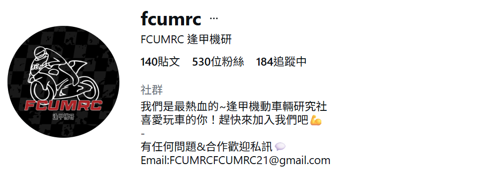

機動車輛研究社

SYM準備了年輕族群最愛的JET車系做為練習車輛，讓年輕人們學習如何正確使用SYM的產品經過本次活動相信大家學到了:
✅摩托車基本駕駛知識
✅實際演練並改善缺點（緊急煞車、轉彎繞錐練習）
✅道路駕駛安全觀念
辦理騎乘經驗、單車維修、單車旅遊等與單車相關的交通安全課程。
《爬坡騎乘》如何分配體力、調整騎乘姿勢，以及如何利用變速系統來輕鬆應對上坡挑戰。
《內外胎更換》學習如何安全有效地更換內外胎，讓大家在遇到爆胎時能快速處理。
《長距離騎乘》學長分享從準備到心態、補給到節奏的實戰心得
寒假服務隊同學們發揮創意，將枯燥的交通法規轉化為生動的闖關遊戲，帶領國小學童在寓教於樂中掌握守護生命的關鍵技能。
系學會不定期配合系辦舉行校外參訪活動，深度鏈結學術理論與產業實務。113及114學年度陸續參訪臺中捷運機廠及行控中心、航空產業巨擘長榮集團、國營臺灣鐵路股份有限公司等等。